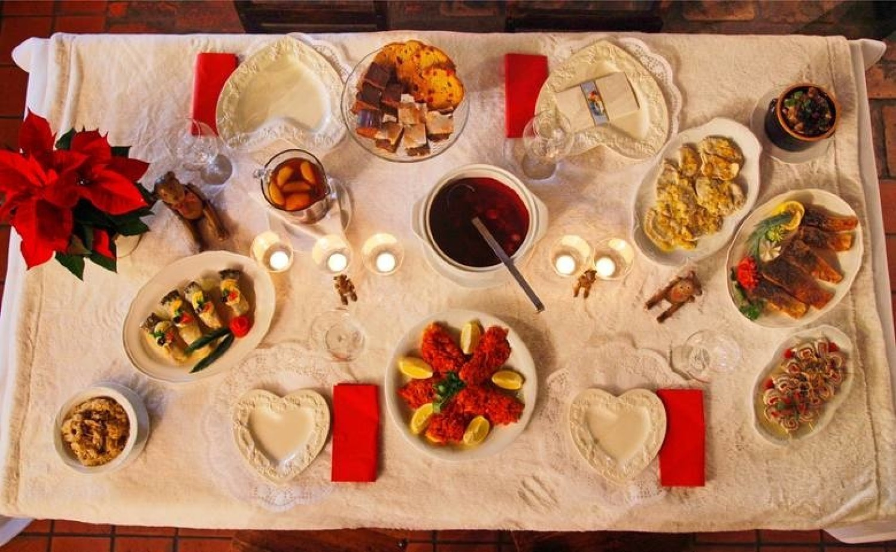

12 Świątecznych potraw
Potrawy te spożywa się z kilku powodów. W rodzinie któs sporządził pewnego dnia takową potrawę i zasmakowała więc została aż po dziś, potrawy nie mogą zawierać mięsa ponieważ jest post więc spożywa się ryby ,które możliwe że są nawiązaniem do przykazania w którym Jezus podwoił ryby i chleb kiedy ich brakowało.
